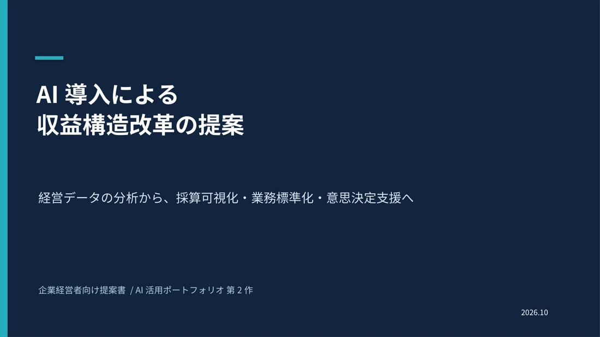

WORK 02 / PROPOSAL
AI導入コンサルティング提案書
架空企業の経営課題を整理し、生成AIの活用可能性を検討。採算可視化や文書業務の標準化など、提案を形にする練習としてまとめました。
作品の概要・資料を見る →私はこれまで、高校教員としての教育経験に加え、金融機関や現在の所属企業でも社内研修講師を務めてきました。現在は企業の企画・管理業務に携わっています。
日々の仕事では、情報やデータをAIに整理してもらい、そこから自分なりの仮説を立て、対話を重ねて考察を深めています。安全会議のコラムや新しい事業アイデアの検討など、発想を広げる場面でもAIを活用しています。
AIに答えを任せきるのではなく、出てきた選択肢から自分で考え、選び、また相談する。そんな使い方が日常になりました。「これもAIでできるだろうか」と考えること自体を楽しんでいます。
今回応募する研修教材制作の仕事を想定し、生成AI初心者が自分の仕事で使い始められることを目標に、PowerPoint全11枚の教材サンプルを制作しました。

取引先へのメールで「AIが勝手に補った事実」を考えるところから始め、社内向け文書の作成・修正演習へ。説明を聞くだけでなく、受講者自身が考え、操作し、確かめる流れを意識しています。
経営分析・AI導入提案・業務引継ぎなど、普段の業務に近いテーマを架空データで試しました。完成された製品ではなく、AIの活用方法を探るための自主制作サンプルです。

架空企業の経営課題を整理し、生成AIの活用可能性を検討。採算可視化や文書業務の標準化など、提案を形にする練習としてまとめました。
作品の概要・資料を見る →
架空企業の608件の取引をもとに、月別・部門別の売上や利益などを整理・可視化。数字を眺めるだけでなく、仮説を考えるための試作です。
作品の概要・資料を見る →
業務メモをAIで手順書化する発想から制作。不明な情報を推測で埋めず、確認事項として残す構成を試したブラウザ用デモです。
作品の概要・デモを見る →文章や数字を構造化してもらい、全体像や見落としていた論点を確認する。
AIが出した複数の可能性から、実用性のありそうなものを自分の判断で選ぶ。
追加の質問や別の視点を通して検討する。重要な情報は原資料などで確かめる。
AIと話すようになって、自分の世界が広がりました。今度は、教育・社内研修の経験と企業実務の知識を生かし、AIを初めて使う方にもその便利さや可能性を伝えられる仕事に携わりたいと考えています。